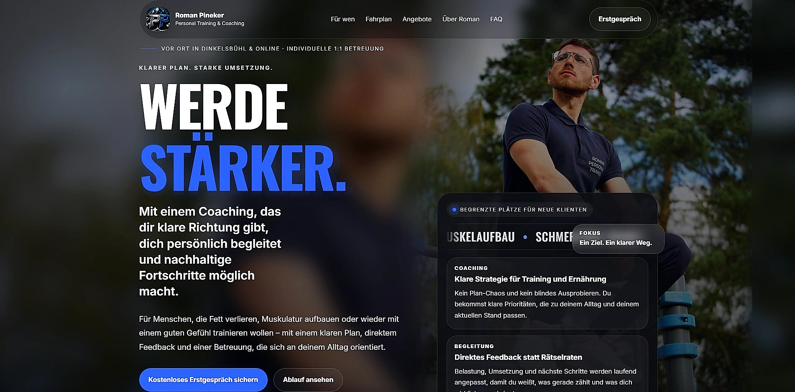
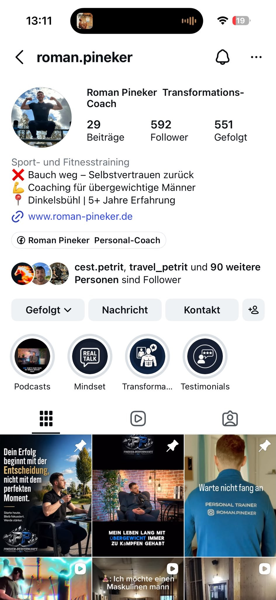
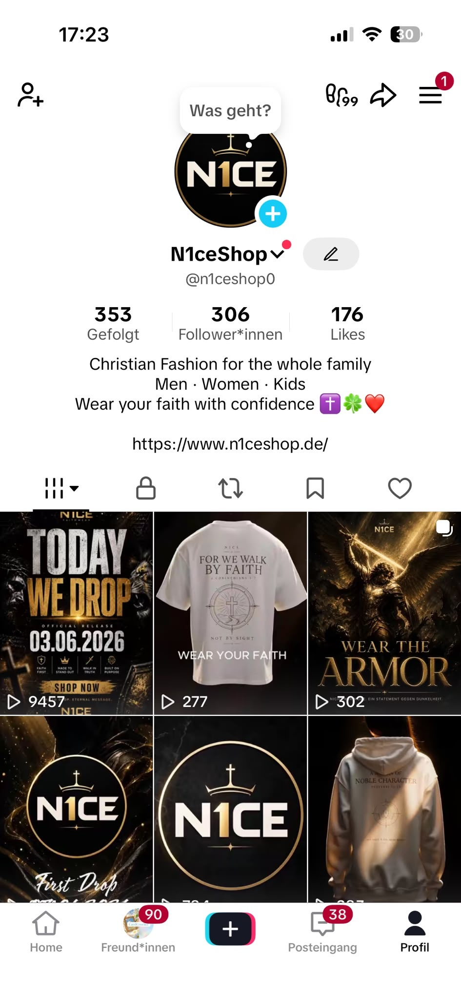

Webdesign
Individuelle Websites mit starker Dramaturgie, hochwertiger Bildwelt und einer Struktur, die Besucher gezielt zur Anfrage führt.
WEB DESIGN & SOCIAL MEDIA MARKETING
Ein digitaler Auftritt, der nicht nach Template aussieht – sondern wie eine Marke wirkt.
DIE WELT BAUT SICH AUF
Strategie, Struktur und Bildsprache werden zu einer Experience, die Besucher führt.
WEBDESIGN MIT DRAMATURGIE
Mobile First, Performance, klare Nutzerführung und ein Look, der im Kopf bleibt.
MEHR ALS NUR EINE SEITE
Jeder Scroll-Moment erzählt deine Marke weiter – vom ersten Eindruck bis zur Anfrage.
SOCIAL MEDIA MIT SYSTEM
Strategie, Reels, Kampagnen und Brand Voice greifen sauber ineinander.
JETZT DIGITAL STÄRKER WERDEN
Lass uns eine Website und Social Media Präsenz bauen, die nicht aussieht wie alle anderen.
Projekt anfragen →Website und Social Media als System
Vom ersten Eindruck bis zur Anfrage greifen Design, Content, Vertrauen und klare Führung sauber ineinander.
Individuelle Websites mit starker Dramaturgie, hochwertiger Bildwelt und einer Struktur, die Besucher gezielt zur Anfrage führt.
Content-Strategie, Reels und Markenkommunikation mit Wiedererkennungswert – abgestimmt auf Website, Zielgruppe und Angebot.
Vertrauen, Angebotsklarheit und Kontaktpunkte werden so verbunden, dass aus Aufmerksamkeit echte Anfragen entstehen.
Problem → Lösung
Dann fehlt meistens nicht die nächste Design-Schicht, sondern ein klares System aus Positionierung, Website, Content und Anfrageführung.
Sie wirkt vielleicht ordentlich, macht aber nicht klar genug, warum Kunden gerade dir vertrauen sollen.
Posts, Reels und Website wirken nicht wie ein gemeinsamer Markenauftritt.
Ohne klare Führung, starke Botschaft und eindeutigen CTA bleibt aus Aufmerksamkeit selten eine Anfrage.
Deine Marke bekommt eine starke visuelle Welt, klare Aussagen und eine Website, die professionell verkauft.
Social Media, Tonalität und Bildsprache passen zur Website und verstärken denselben hochwertigen Eindruck.
Struktur, Vertrauen, CTA und Kontaktpunkte greifen so ineinander, dass Besucher leichter anfragen.
Ein Auftritt, der nicht nur hochwertig aussieht, sondern Orientierung gibt, Vertrauen schafft und aus Interesse echte Anfragen macht.
Projekt besprechen →Für wen ist das?
Ob lokal, persönlich, handwerklich oder visuell geprägt: Dein Auftritt wird so aufgebaut, dass er zur Branche passt und nicht wie eine austauschbare Vorlage wirkt.
Für Restaurants, Imbisse und regionale Anbieter, die schnell Vertrauen schaffen und Kunden klar zur Anfrage oder Bestellung führen wollen.
Referenz: Ersan’s Kebap 02 Coaches & DienstleisterFür persönliche Marken, die Expertise, Vertrauen und Wiedererkennung über Website und Social Media aufbauen möchten.
Referenz: Coach Roman 03 Handwerk & BauFür Betriebe, die hochwertige Arbeit sichtbar machen und aus Website-Besuchern echte Anfragen gewinnen möchten.
Referenz: Vasyl Shkurat 04 Beauty & GastronomieFür Marken, bei denen Atmosphäre, Bildsprache und Vertrauen direkt darüber entscheiden, ob Kunden Kontakt aufnehmen.
Referenz: Avanti HaarstudioDIGITALE PRÄSENZ
Eine Bühne für starke digitale Auftritte – mit visueller Tiefe, technischer Klarheit und einem Look, der hängen bleibt.
VERBUNDENE MODULE
Einzelne Elemente wirken nicht isoliert, sondern sind intelligent miteinander verbunden – genau wie dein Angebot.
SYSTEM & PERFORMANCE
Wenn Strategie, Design und Technologie sauber zusammenspielen, entsteht ein digitales System mit echter Wirkung.
ERGEBNISSE & WACHSTUM
Am Ende geht es nicht nur um schöne Bilder, sondern um Vertrauen, Klarheit und Ergebnisse, die deine Marke weiterbringen.
Referenzen ansehen →System & Ablauf
Strategie, Design, Technologie und Content werden nicht getrennt gedacht, sondern als klarer Prozess geplant – damit dein Auftritt hochwertig wirkt und Ergebnisse liefern kann.
Zielgruppe, Angebot, Positionierung und Look werden sauber geklärt, damit der Auftritt Substanz und Richtung bekommt.
Wir planen Dramaturgie, Seitenstruktur, Texte, Scroll-Momente und die visuelle Welt deiner Marke.
Design, Entwicklung, Responsiveness, Formular, Animationen und Launch greifen wie ein sauberer Produktionsprozess ineinander.
Referenzen
Ein moderner Handwerksauftritt mit klarer Positionierung, starkem Hero und direkter Kontaktführung.
Website ansehen →Ein warmer, lokaler Auftritt mit klarer Speisekarten-Führung, Vertrauen und direktem Bestellimpuls.
Website ansehen →Elegante Atmosphäre, hochwertige Bildsprache und ruhige Premium-Anmutung für Salon und Styling.
Website ansehen →Strukturierter Unternehmensauftritt mit Informationsdichte, Vertrauen und klarer Angebotsführung.
Website ansehen →Atmosphärischer Website-Auftritt für Drinks, Stimmung und Bar-Food – mit starkem Hero, klaren Infos und direkter Kontaktführung.
Website ansehen →Moderner lokaler Website-Auftritt mit klarer Angebotsführung, Speisekarte und direkter Vorbestellung.
Website ansehen →Positionierter Coaching-Auftritt mit klarer Zielgruppe, Vertrauensaufbau und direkter Gesprächsführung.
Website ansehen →
Eleganter Salon-Auftritt mit hochwertiger Bildwirkung, Atmosphäre und klarer Kontaktführung.
Website ansehen →Strukturierter Unternehmensauftritt mit Informationsdichte, Vertrauen und klarer Angebotsführung.
Website ansehen →Atmosphärischer Website-Auftritt für Drinks, Stimmung und Bar-Food – mit starkem Hero und direkter Kontaktführung.
Website ansehen →Projekt starten
Schreib kurz, worum es geht. Ich prüfe dein Projekt und melde mich mit einer klaren, ehrlichen Einschätzung zurück.
Social Media
Profile, die nicht zufällig wirken.
Social Media ist kein Nebenkanal. Es ist der tägliche Eindruck deiner Marke. Deshalb müssen Feed, Profil, Story und Website wie ein System zusammenspielen.

Roman Pineker
Ein klar positionierter Coaching-Auftritt mit wiedererkennbarem Content, starkem Transformationsthema und direkter Vertrauenswirkung.

N1CE Shop
Ein markenorientierter Faithwear-Auftritt mit klarer Bildsprache, emotionalem Produktgefühl und sauberer Drop-Kommunikation.
Der stärkste Eindruck entsteht, wenn Website und Social Media dieselbe Sprache sprechen: gleiche Marke, gleiche Richtung, gleiche Wirkung.